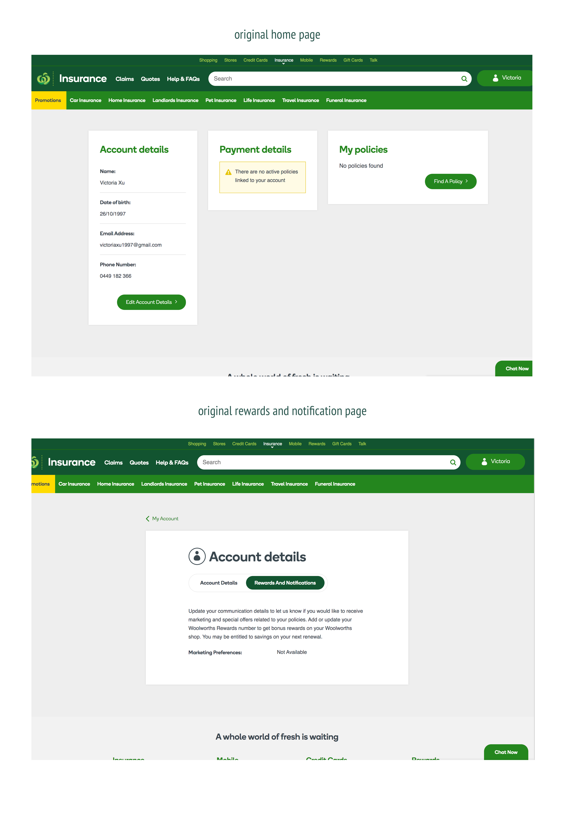

VXU
about me
My Insurance Portal
My Insurance Portal is a new portal currently in the works to allow customers to
manage their insurance policies.
01. the goal
My aim for My Insurance Portal is to use my creative problem solving skills to simplify
and personalise the customer experience so that they can easily manage their policies on a dashboard.
02. who was it for?
Any Woolworths customers who have purchased insurance policies, which range from life to travel!
03. the problem
1. My Insurance Portal would have a high engagement rate for first- time customers but
then experience a high drop off rate within the first month
2. Customers find the original online portal to be hard to navigate and not user friendly
3. Design elements were not consistent with Woolworths core supermarket business
4. The original portal did not have a minimalist design because of repetitive information and buttons

I received notes from the ideation workshops held to recognise the pain points of the customer
experience on the original portal. After doing a heuristic evaluation of the original design, I also
discovered there was limited functionality across the website to manage a customer’s insurance policy.
Redesigning the UI
I created low fidelity wireframes for desktop and mobile through Balsamiq, to incorporate all the ideas
from the workshop from my team and my ideas.

High fidelity wireframes first iterations
I created some high fidelity drafts that remained consistent with Woolworth’s pre-existing brand
colours, typography and icons.
Disclaimer: What I am showcasing currently is not the final product, just my first iteration of wireframes.


Incorporating User feedback
Shh...too be continued...
05. Reflections and takeaways
This is the first time I’ve ever been part of a project that would be used by an average
consumer and it is still very exciting. I have learnt so much on the way (and still am!) about
the importance of heuristics when analysing designs and incorporating user feedback to make a
more personalised experience for customers. What I am showcasing so far has been the very
first iterations of the project so far but stay tuned to see what the final product will look like!
Next: Control Room
Previous: ChipHound